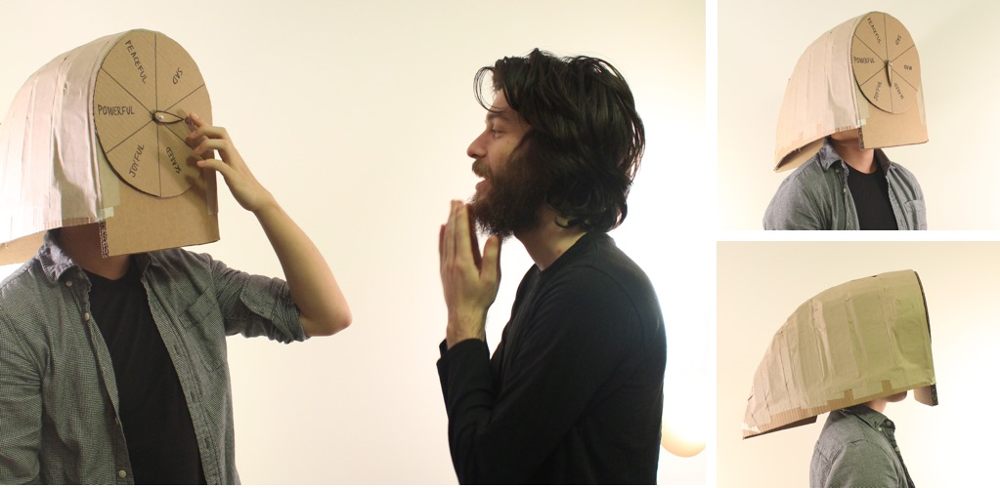
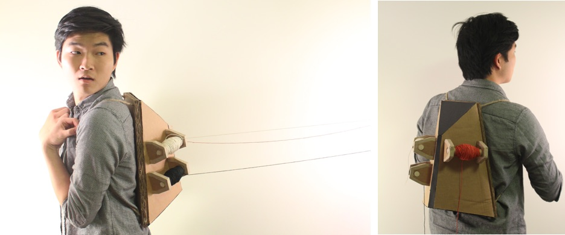

These are a series of personal projects that I have been working on. Currently I am exploring the idea of understanding and empathy; me better understanding myself, me better understanding other people, other people better understanding me, and me better understanding the world. These projects range from purely performative to fully functional.
I ask myself how I can better express my emotions with my face. I have been known to have a resting angry face, which has led to many misunderstandings during conversations. I created this piece as a way to think about how one might design assistive technologies that may help us socially and emotionally. This helmet/mask explicitly points to what emotion the wearer is feeling, so there can be no confusion between the wearer and the person they are interacting with.

How can I feel more connected to the people I care about in a tangible way? I prototyped this backpack that has rolls of string attached to it; each roll of string is attached to one of my friends. In the coming weeks, my friends and I will try to go about our days attached to one another. Everytime I look at one of the strings, I will know that it is connected to one of my friends.
